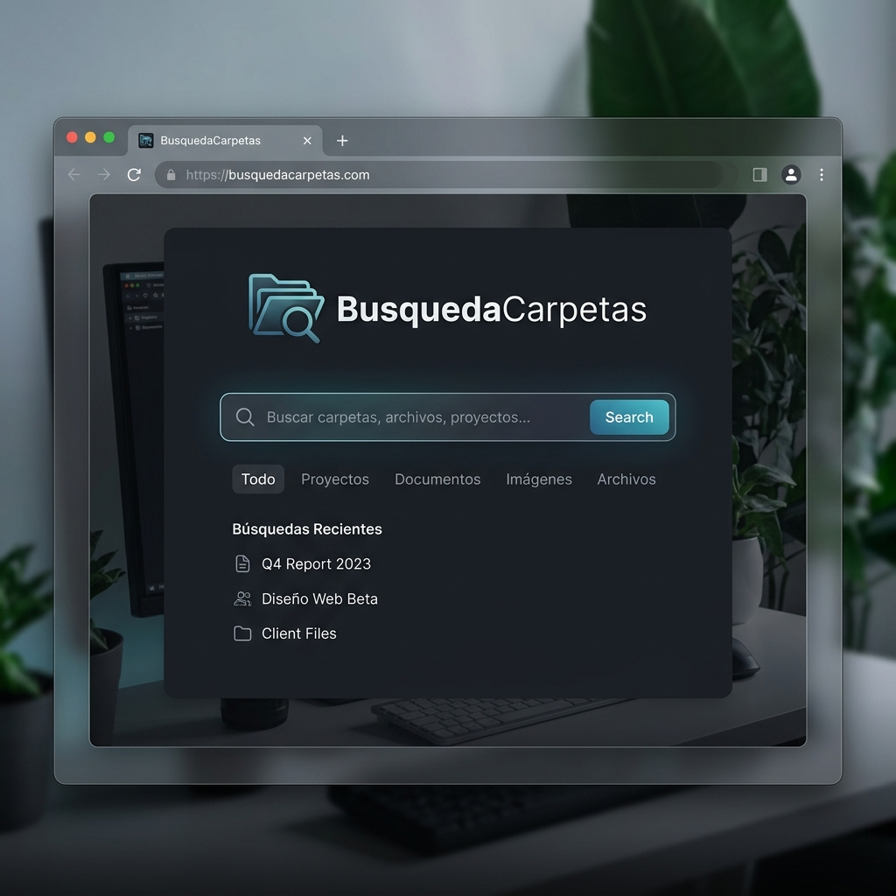
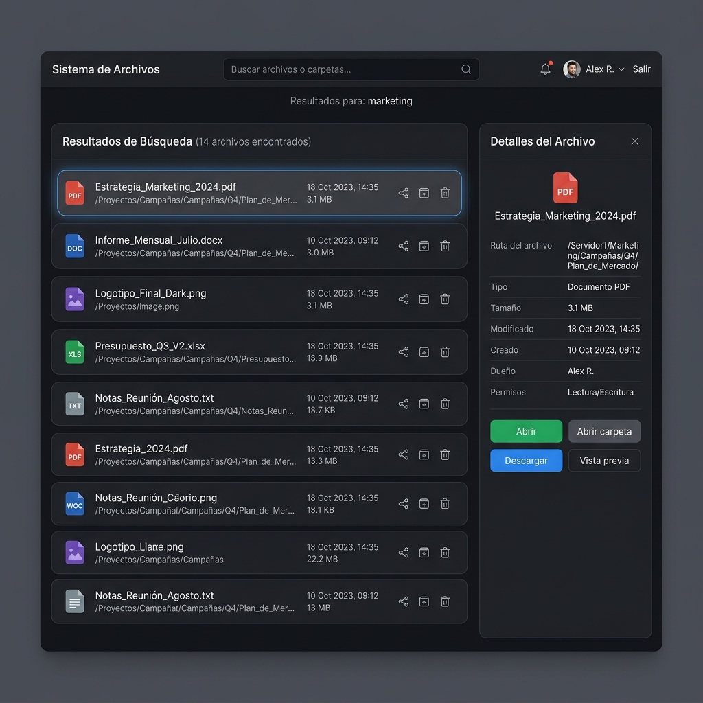

💡 Consejo: Para convertir esta guía en PDF, presiona Ctrl + P y selecciona "Guardar como PDF".
Paso 1
Acceso al Sistema
Abre tu navegador (Chrome, Edge o Firefox) e ingresa la siguiente dirección en la barra de búsqueda:
http://172.30.213.219:8080
Verás una interfaz moderna con un buscador central. El sistema ya ha indexado miles de documentos para que encuentres lo que necesitas en segundos.

Paso 2
Configuración de un solo clic
Para poder abrir carpetas y archivos directamente desde la web (sin tener que buscarlos manualmente en tu PC), debes instalar un pequeño acceso directo.
- Busca el banner azul que dice "Instala el acceso directo" o haz clic en el botón 🔌 Configurar arriba a la derecha.
- Se descargará un archivo llamado instalar_cliente.bat.
- Haz doble clic en él y presiona cualquier tecla cuando te lo pida.
Nota importante: Solo necesitas hacer esto una vez por computadora. Este paso permite que el navegador se comunique con tu explorador de archivos local.
Paso 3
Búsqueda Inteligente
Escribe cualquier palabra o frase en el buscador. El sistema es "insensible a acentos", por lo que buscar anotación o anotacion dará los mismos resultados.
- Filtros: Puedes filtrar por tipo de archivo (PDF, Word, Excel) usando los botones debajo del buscador.
- Fragmentos: Verás un pequeño texto debajo de cada resultado indicando dónde se encontró la palabra buscada.
Paso 4
Interacción con Resultados
Al hacer clic en un resultado, se abrirá un panel lateral derecho con toda la información y acciones disponibles:

- 📄 Abrir archivo: Abre el documento directamente con el programa que tengas instalado (Word, PDF Reader, etc.).
- 📂 Abrir carpeta: Abre el Explorador de Windows justo en la ubicación donde está el archivo.
- 📋 Copiar ruta: Copia la dirección completa para pegarla en correos o chats.
- ⬇️ Descargar: Si estás trabajando fuera de la red local, puedes descargar el archivo vía web.